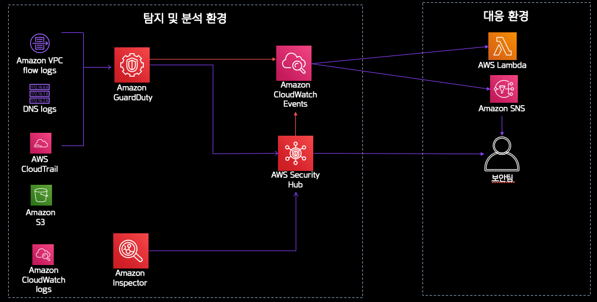

AWS 는 여러분들의 클라우드 운영환경에서 발생할 수 있는 다양한 침해 사고와 보안 위협을 탐지하고 분석할 수 있는 다양한 서비스와 도구들을 제공하고 있습니다. 대표적으로 Amazon GuardDuty 와 Macie, Inspector 와 같은 서비스를 사용하시면 AWS 운영환경에서 발생할 수 있는 인스턴스의 침해나 AWS 계정의 침해 등을 탐지할 수 있으며 여러분들이 사용하시는 EC2 인스턴스의 보안 환경을 좀 더 안전하게 운영하실 수 있습니다. 또한, 이와 같은 AWS 보안 서비스를 다수의 계정 운영 환경에서 보다 효율적으로 모니터링하고 대응할 수 있도록 Security Hub 라는 서비스를 함께 제공하고 있습니다. Security Hub 는 AWS 에서 제공하는 보안 서비스 뿐만 아니라 여러분들이 사용하시는 3rd Party 보안 제품과의 통합도 지원하고 있으므로 다양한 보안 솔루션을 운영하는 환경이라면 더욱 더 효율적인 보안 서비스 통합 환경을 구성하실 수 있습니다.
본 실습은 오레곤 리전(Oregon, us-wast-2)에서 진행됩니다.
본 실습에서 사용된 CloudFormation 템플릿들은 실습에서 진행되는 환경을 위해 특별히 제작된 것으로, 운영환경에서 실행하지 않도록 주의합니다.
- Amazon GuardDuty는 AWS 계정과 워크로드를 보호하기 위한 지능형 위협 탐지 및 지속적인 모니터링 서비스입니다.
- Amazon Inspector는 AWS상에서 운영되는 고객 애플리케이션 환경에 대해 보안과 규정 준수 수준을 향상시키기 위한 자동화된 보안 수준 점검 기능을 제공합니다.
- Amazon CloudWatch는 AWS 리소스와 AWS상의 고객 애플리케이션들을 모니터링하기 위해 메트릭 수집, 로그 파일 모니터링, 경보 설정, 변경에 대한 자동화된 대응 등의 기능을 제공합니다.
- AWS CloudTrail은 AWS 어카운트의 거버넌스, 컴플라이언스, 운영 및 리스크 감사 기능을 제공합니다.
- AWS Config는 AWS 리소스의 구성을 측정, 감사 및 평가하게 해주는 일종의 자산관리 기능을 제공하는 서비스입니다
- AWS Lambda 를 사용하면 서버를 프로비저닝하거나 관리할 필요 없이 코드를 실행할 수 있습니다. 사용한 컴퓨팅 시간만큼만 비용을 지불하고, 코드가 실행되지 않을 때는 요금이 부과되지 않습니다.
- AWS CloudFormation 은 클라우드 환경 내 모든 인프라 리소스를 설명하고 프로비저닝할 수 있도록 공통 언어를 제공합니다. CloudFormation을 사용하면 간단한 텍스트 파일을 사용하여 자동화되고 안전한 방식으로 모든 리전과 계정에 걸쳐 애플리케이션에 필요한 모든 리소스를 모델링 및 프로비저닝할 수 있습니다.
- AWS IAM(Identity and Access Management) 를 사용하면 AWS 서비스와 리소스에 대한 액세스를 안전하게 관리할 수 있습니다. 또한, AWS 사용자 및 그룹을 만들고 관리하며, 권한을 사용해 AWS 리소스에 대한 액세스를 허용 및 거부할 수 있습니다.
- Amazon VPC(Virtual Private Cloud) 는 AWS 클라우드에서 논리적으로 격리된 공간을 프로비저닝하여 고객이 정의하는 가상 네트워크에서 AWS 리소스를 시작할 수 있게 해줍니다.
- Amazon S3 는 웹 사이트에서 모바일 앱, 기업 애플리케이션, IoT 센서나 디바이스의 데이터에 이르기까지 어디서나 원하는 양의 데이터를 저장하고 검색할 수 있도록 구축된 객체 스토리지입니다.
- Amazon SNS(Simple Notification Service) 는 유연한 완전 관리형 게시/구독 메시징 및 모바일 알림 서비스로서, 구독하고 있는 엔드포인트 및 클라이언트로 메시지를 전달하는 작업을 조정합니다.
- AWS System Manager 는 AWS 인프라에 대한 가시성과 제어를 제공합니다. Systems Manager는 통합된 사용자 인터페이스를 제공하므로 여러 AWS 서비스의 운영 데이터를 보고 AWS 리소스 전체에서 운영 작업을 자동화할 수 있습니다.
- AWS SecurityHub 는 멀티 어카운트 환경에서 주요 보안 경보 및 규정 준수 상태에 대한 광범위하고 통합적인 뷰를 제공합니다. GuardDuty, Inspector, Macie 같은 AWS 보안 서비스뿐만 아니라 다른 파트너 제품과의 연동도 지원하며 각 서비스들이 탐지한 내역들에 대한 요약 및 통합 대쉬보드를 통해 상시 감사체계를 구축할 수 있도록 해줍니다.
아래는 이번 실습에 사용되는 서비스 간 아키텍쳐입니다.
